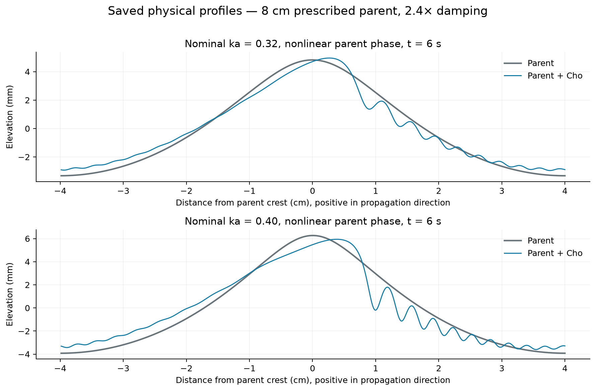

Steepness and pressure-transfer controls
Do steeper parent waves produce more capillary roughness?
These experiments ask whether the weak capillary contribution in the coupled runs comes from insufficient curvature, the parent-wave phase approximation, or the way pressure drives the Cho correction.
Prescribed-parent controls; not two-way current runs. There is no evolving mean current in these tests. All cases retain 2.4× viscous damping, with effective viscosity 2.4 × 10−6 m2 s−1.
Measure slope where the capillaries live
Mean-square slope (MSS) is positive definite. The parent, Cho correction, and combined surface each have a nonnegative MSS. Their cross contribution can have either sign:
MSStotal = MSSparent + MSSCho + 2⟨∇ηparent · ∇ηCho⟩
A correction can therefore add short ripples while reducing slope at the carrier wavelength. The plots separate those effects. Here the capillary band means wavelengths at or below 17.14 mm, where surface tension contributes at least as much as gravity to the linear restoring force. MSS is evaluated in physical horizontal coordinates.
1. Increase curvature; compare the parent phases
An 8 cm, initially monochromatic parent is prescribed at nominal leading-amplitude steepness ka = 0.12, 0.24, 0.32, and 0.40. Each has a linear-phase arm and an arm with the isolated-wave Stokes frequency correction. Geometry and harmonic-potential coefficients remain second order in both arms. Each run lasts 6 seconds.
Both arms use the same projected kinematic and dynamic residuals, Cho dispersion and nonlinearity, parent orbital transport, and damping as the frozen Langmuir campaign. These long-crested, one-period tests isolate the forced response; they exclude transverse and subharmonic instabilities.
The phase correction has a specific mathematical role: it cancels the leading resonant cubic residual at the parent wavelength. An independent small-amplitude check finds that this residual then scales as the fifth power of amplitude. Bounded third-order geometry and potential corrections are still omitted, so other source harmonics remain approximate. See the derivation audit.
| ka | Parent phase | Averaged interval (s) | Parent MSS | Total MSS | Total change | Parent capillary MSS | Total capillary MSS | Capillary share of total |
|---|

The ka = 0.40 case is an exploratory curvature stress test. A second-order parent is not an exact steep Stokes wave, and a large Cho correction may exceed the perturbative coupling assumption. Changing only the phase is a sensitivity test, not a complete higher-order parent model.
2. Keep the exact Stokes parent; change only the pressure transfer
The earlier pronounced ripple response used a 12 cm exact gravity Stokes wave at kH/2 = 0.40 (first-harmonic ka ≈ 0.354). Two 10-second runs retain that parent, arclength transport, normal displacement geometry, original Cho dispersion and nonlinearity, and 2.4× damping.
Only the pressure source changes: the Cho pressure derivative iKπ̂/2, or the same source divided by the dimensionless gravity–capillary frequency ΩGC(K) = √[|K|(1 + K²)/2]. This division changes how each wavelength is forced; it is not a uniform forcing multiplier.
| Pressure source | Saved duration (s) | Parent MSS | Total MSS | Total change | Parent capillary MSS | Total capillary MSS | Capillary share of total |
|---|
The frequency-divided source comes from a flat, one-way elevation projection. It is not an exact curved-parent linearization. The other source follows the pressure-derivative extension of Cho. This comparison measures sensitivity to those closures; choosing whichever creates more roughness would not validate the physics.